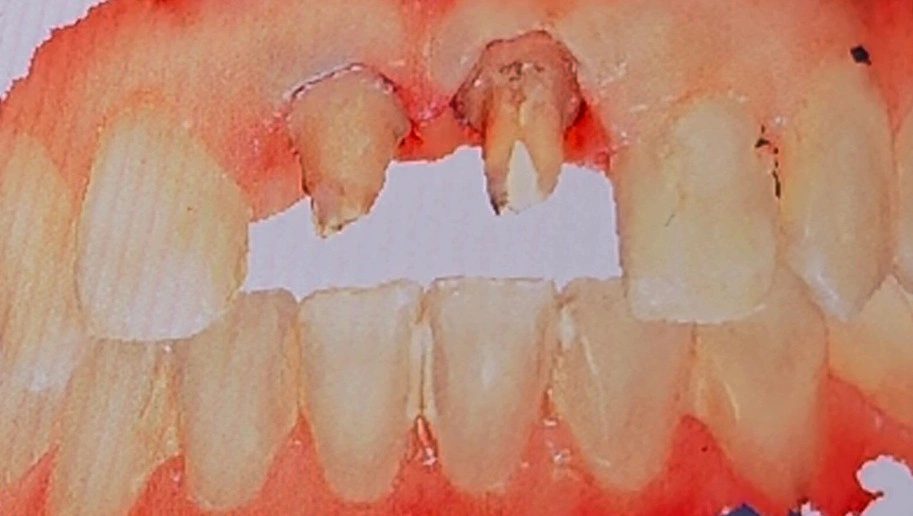

Insight 63 — چرا برای این بیمار قبل از اسکن نخگذاری نکردم؟
تاریخ انتشار:
آخرین بازبینی:
English

توضیح بالینی
وقتی نارضایتی از کانتورِ روکشهای ایمپلنتی با التهابِ بافتِ نرمِ اطراف همزمان میشود، گاهی بهترین تصمیم این است که تراش را دستنخورده نگه داریم و نخگذاری و کنترلِ مایعات را تا فازِ نهایی به تعویق بیندازیم، تا لابراتوار با مارجینِ کوتاهتر هم کانتور را اصلاح کند و هم به بافتِ نرم فرصتِ بهبودی بدهد
این یادداشت دربارهی یک تصمیمِ خلافِ روال در مرحلهی میانیِ یک درمانِ پروتزی-ایمپلنتی است. بیمار هم از فرمِ روکشها ناراضی بود و هم بافتِ نرمِ اطرافِ ایمپلنتهایش ملتهب بود؛ رفتن سراغِ نخگذاری و کنترلِ مایعات در چنین شرایطی میتوانست کار را بدتر کند. تصمیمی که گرفتم، در نگاهِ اول، خلافِ پروتکلِ معمول به نظر میرسید.
-
توضیح بالینی
بیمار از فرم و کانتور دو روکش قدامی خود ناراضی بود و لثهی اطراف ایمپلنتها نیز التهاب داشت. بهجای رویکرد معمول، تصمیم گرفتم بدون نخگذاری و کنترل مایعات پیش بروم تا لابراتوار روکشهای موقت را با مارجین کوتاهتر بسازد. این استراتژی به لثهها فرصت داد تا در کنار بررسی کانتور جدید، بهخوبی بهبود پیدا کنند؛ هرچند برای مرحلهی نهایی، تراش و اسکن مجدد برای ثبت دقیق مارجینها الزامی است. -
رویکرد معمول در اصلاح کانتور
بهطور کلی، وقتی بیماری از فرم روکشهای قبلی ناراضی است، روند کار مشخص است: روکش را خارج میکنیم و یک روکش موقتِ اصلاحشده داخل دهان قرار میدهیم. پس از اینکه بیمار فرم و کانتور جدید را طی یک مدت مشخص تأیید کرد، به لابراتوار میگوییم روکش نهایی را بر اساس همان تراش قبلی بسازد (یا اگر تغییرات خاصی در کانتور مدنظر است، آنها را اعمال کند). در این حالت چون تراش تغییری نکرده، کار نسبتاً سرراست پیش میرود. -
مسئله در این کیس
اما در این بیمار شرایط متفاوت بود. در کنار نارضایتی از فرم روکشها، با التهاب بافت نرم اطراف ایمپلنتها مواجه بودیم. محیط پر از خون و التهاب بود و در این شرایط، دستکاری بیشتر بافت به صلاح نبود. -
کاری که کردم (یک عقبنشینی استراتژیک)
در این مرحله تصمیم گرفتم تراش را اصلاح نکنم. با توجه به شرایط بافت نرم، نه نخگذاری کردم و نه تلاشی برای کنترل مایعات انجام دادم.
نتیجهی این کار چه بود؟ لابراتوار در مواجهه با این وضعیت، مجبور شد مارجینهای روکش موقت را کمی کوتاهتر بسازد. وقتی این روکشهای جدیدِ مارجینکوتاه را تحویل بیمار دادم، دو هدف مهم به طور همزمان محقق شد:
۱. کانتور و فرم جدید توسط بیمار بررسی و تأیید شد.
۲. بافت نرم از زیر فشار مارجینهای قبلی آزاد شد و لثهها به سمت بهبودی کامل رفتند. -
حرکت به سمت کار نهایی و حرف آخر
حالا که التهاب لثه برطرف شده و از کانتور هم رضایت داریم، میخواهیم وارد فاز ساخت روکش نهایی شویم. تفاوت مهم این کیس با کیسهای روتین در همین مرحله خودش را نشان میدهد: اینجا دیگر نمیتوانم به لابراتوار بگویم «از روی همان تراش و اسکن قبلی کار را پیش ببر».
برای کار نهایی، حالا باید تراش را اصلاح کنم، مایعات را بهخوبی کنترل کنم، نخگذاریِ اصولی انجام دهم و در نهایت یک اسکن یا قالبگیری مجدد و دقیق برای ثبت مارجینهای نهایی داشته باشم. گاهی برای رسیدن به یک نتیجهی ایدهآل کلینیکی، باید یک مرحله به بافت نرم زمان داد و آگاهانه از پروتکلهای روتین فاصله گرفت.
محتوای این صفحه برای استفادهٔ آموزشی دندانپزشکان و دانشجویان دندانپزشکی تهیه شده است.